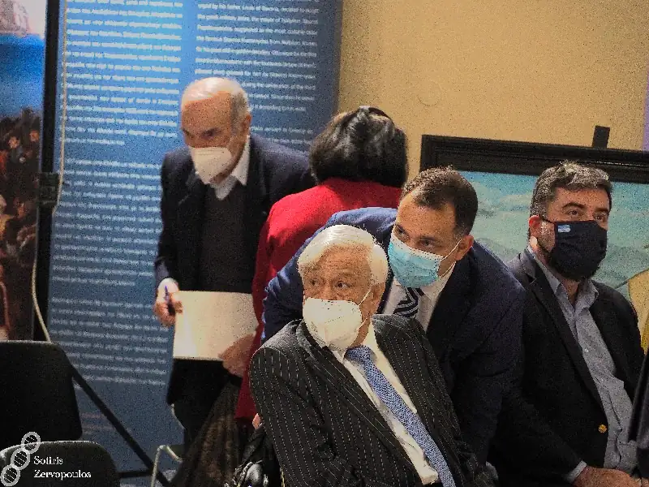

ΕΚΘΕΣΗ: ΒΟΥΛΕΥΤΙΚΟ ΝΑΥΠΛΙΟΥ
Από 27 έως 30 Νοεμβρίου 2021
ΘΕΜΑ: 199 χρόνια από την απελευθέρωση του Ναυπλίου
Πανηγυρική εκδήλωση για την 199η επέτειο απελευθέρωσης του Ναυπλίου με ομιλία Παυλόπουλου. Η καθιερωμένη ετήσια πανηγυρική εκδήλωση για την επέτειο της απελευθέρωσης του Παλαμηδιού και της πόλης του Ναυπλίου που φέτος συμπληρώνει τα 199 χρόνια, πραγματοποιήθηκε το Σάββατο 27 Νοεμβρίου 2021.
Χαιρετισμούς απηύθυναν, ο Πρόεδρος του Συλλόγου «Ο ΠΑΛΑΜΗΔΗΣ» Θεοδόσης Σπαντιδέας, ο Δήμαρχος Ναυπλιέων Δημήτρης Κωστούρος, ο Περιφερειάρχης Πελοποννήσου Παναγιώτης Νικας, ο Αντιπεριφερειάρχης Αργολίδας Ιωάννης Μαλτέζος, Εκπρόσωπος της γενέτειρας του Πορθητή Στάικου Σταϊκόπουλου και ο Πρόεδρος του Συλλόγου των Απανταχού Ναυπλιέων «Ο ΝΑΥΠΛΙΟΣ» Κώστας Κολόκας.

